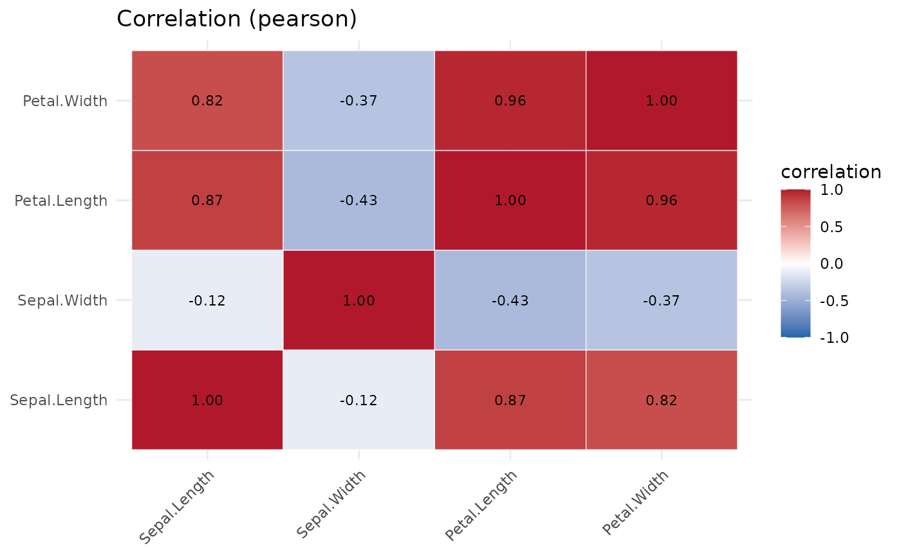

The package's single entry point. It runs type inference, missing-value
analysis, summary statistics, normality tests, outlier detection, correlation
analysis and a data-quality score, and (optionally) builds a set of
ggplot2 visualisations. The result is a data_profile S3 object with
print(), summary() and plot() methods.
Usage
profile_data(
df,
dataset_name = NULL,
build_plots = TRUE,
distributions = TRUE,
normality = TRUE,
outlier_method = "iqr",
cor_method = c("pearson", "spearman"),
group_by = NULL,
verbose = FALSE
)Arguments
- df
A data frame with at least one row and one column and unique, non-empty column names.
- dataset_name
Optional label stored in the metadata; defaults to the deparsed name of
df.- build_plots
Whether to build the ggplot2 objects. Set
FALSEto skip plotting on very wide data. DefaultTRUE.- distributions
Whether to build a per-column distribution plot (the eager, heaviest part of plotting). Set
FALSEon wide data and useplot_distribution()on demand. Ignored ifbuild_plots = FALSE. DefaultTRUE.- normality
Whether to run normality tests. Default
TRUE.- outlier_method
Method passed to
outlier_summary():"iqr","zscore"or"robust". Default"iqr".- cor_method
Correlation methods: any of
"pearson","spearman".- group_by
Optional name of a categorical column. If supplied, a grouped comparison of the numeric columns is added to the diagnostics (see
compare_groups()).- verbose
Print progress messages. Default
FALSE.
Value
An object of class data_profile: a list with elements metadata,
statistics, diagnostics, plots and call.
Examples
p <- profile_data(iris)
p
#> <data_profile>
#> dataset : iris
#> size : 150 rows x 5 columns
#> types : categorical=1, numeric=4
#> missing : 0.0% of cells; 100.0% of rows complete
#> quality : 99.7 / 100 (grade A)
#> use summary() for details and plot() for figures.
summary(p)
#> Data profile for 'iris' (150 x 5), quality 99.7 (A)
#>
#> -- numeric summary --
#> column n n_missing mean sd variance min q1 median q3 max iqr
#> Sepal.Length 150 0 5.843 0.828 0.686 4.3 5.1 5.80 6.4 7.9 1.3
#> Sepal.Width 150 0 3.057 0.436 0.190 2.0 2.8 3.00 3.3 4.4 0.5
#> Petal.Length 150 0 3.758 1.765 3.116 1.0 1.6 4.35 5.1 6.9 3.5
#> Petal.Width 150 0 1.199 0.762 0.581 0.1 0.3 1.30 1.8 2.5 1.5
#> skewness kurtosis
#> 0.312 -0.574
#> 0.316 0.181
#> -0.272 -1.396
#> -0.102 -1.336
#>
#> -- normality (Shapiro-Wilk) --
#> column n_used shapiro_p normal
#> Sepal.Length 150 1.02e-02 FALSE
#> Sepal.Width 150 1.01e-01 TRUE
#> Petal.Length 150 7.41e-10 FALSE
#> Petal.Width 150 1.68e-08 FALSE
#>
#> -- outliers (iqr) --
#> column n_outliers pct
#> Sepal.Length 0 0.00
#> Sepal.Width 4 2.67
#> Petal.Length 0 0.00
#> Petal.Width 0 0.00
#>
#> -- strongest correlations (pearson) --
#> var1 var2 correlation
#> Petal.Length Petal.Width 0.963
#> Sepal.Length Petal.Length 0.872
#> Sepal.Length Petal.Width 0.818
#> Sepal.Width Petal.Length -0.428
#> Sepal.Width Petal.Width -0.366
#> Sepal.Length Sepal.Width -0.118
#>
# \donttest{
plot(p, which = "correlation")

# }